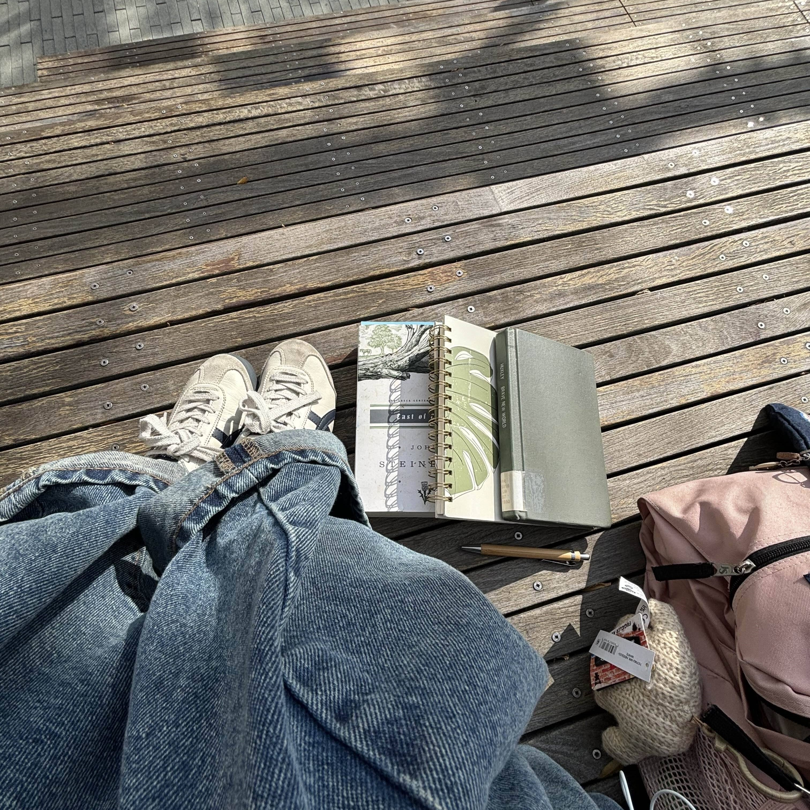
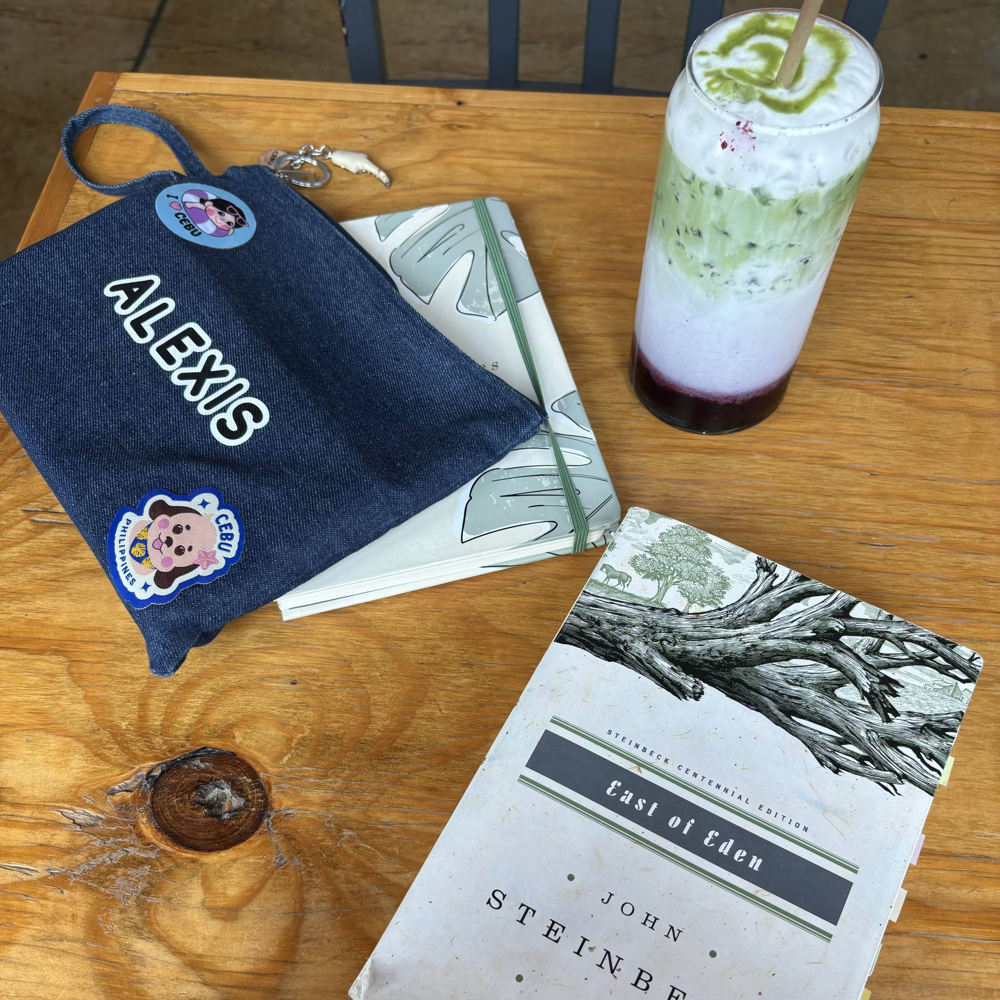
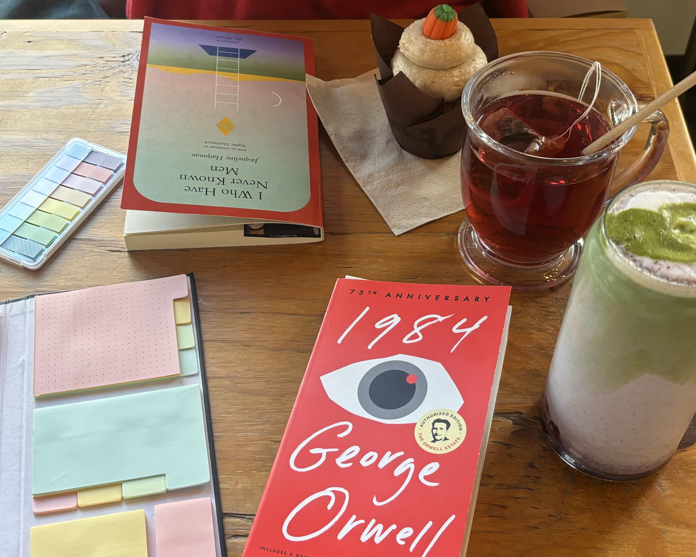
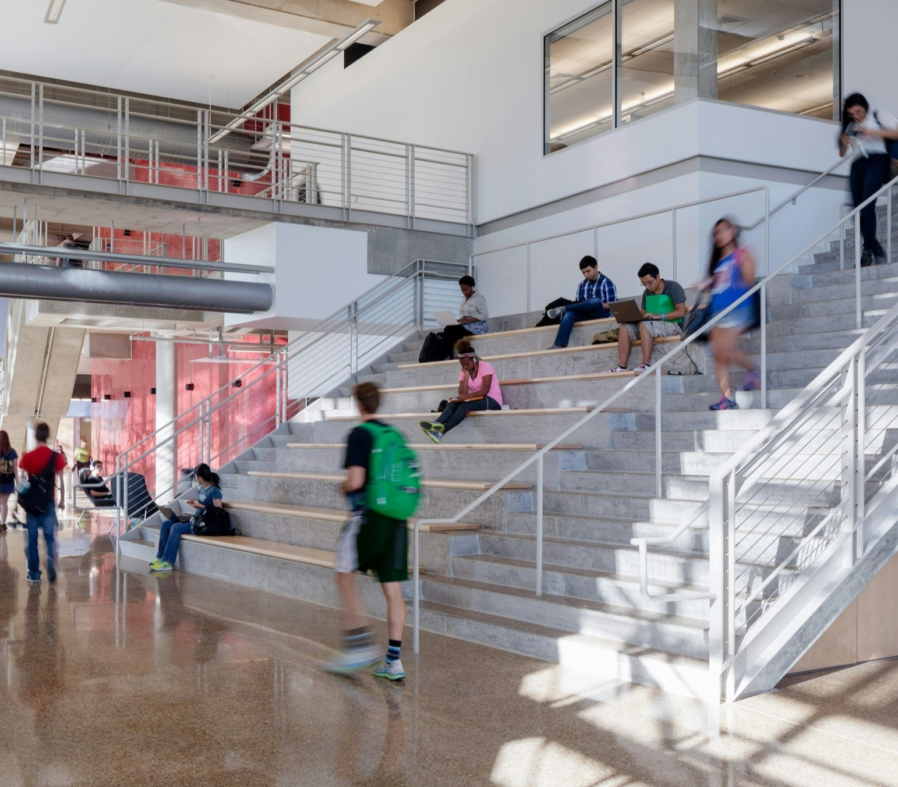
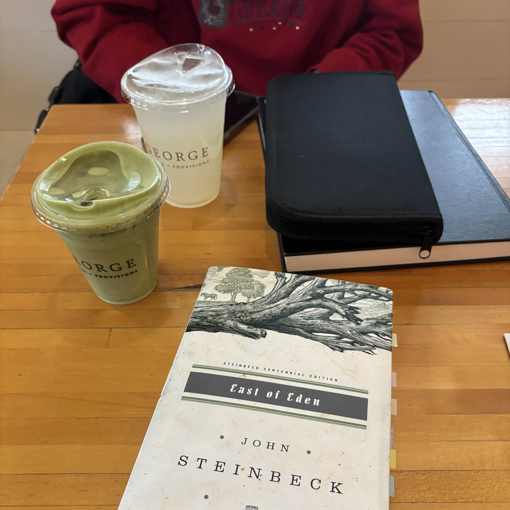
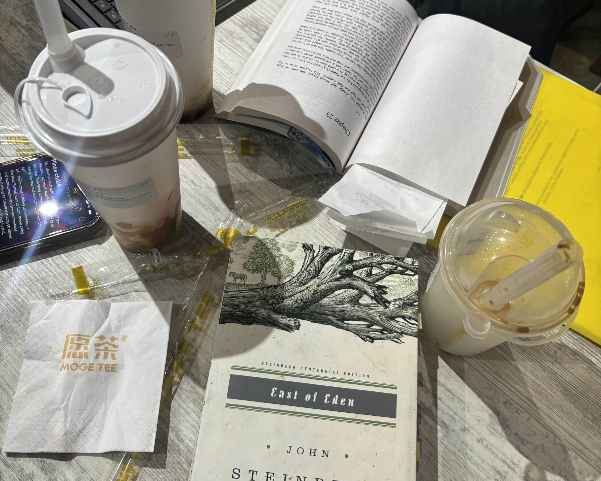

It's always nice to go out and read a good book, whether that just be outside or in a coffee shop. Last month I decided that instead of reading in the comfort of my own home, I would go out and document the places where I've read this month. So here are the notable places I've read!
1. UTD Plinth
I frequented the UTD Plinth steps a lot last month. I always enjoy writing, reading, or doing work here,
though I often get distracted people watching so I prefer to come here to read in the mornings when there's not so
many distractions. It's nice to have the sun shining on you as you flip through pages, but the only downside is
that sometimes (well, all the time) bees or some big, scary, flying insect will approach you.
I will be here less now that the weather is getting colder, but it's funny because it was always too hot outside
whenever I was here. But overall, this is a 4 out of 5 stars reading spot!
2. Grutogi - Flower Mound
 Grutogi is another spot I go to often to just read, write, meet up with friends, or if I want a sweet treat. It has the perfect vibes and coziness to it, and although it's a spot you could study at, I prefer not too linger for too long and stick to smaller tasks like reading since the place itself is small with limited seating. I keep coming back because I love their blueberry matcha latte and it can get pretty quiet here, so it's good for focusing! I am a bit biased towards this spot, so I give it a 5 out of 5 for reading.
3. UTD ATEC Steps
Once I got attacked by bugs on the UTD Plinth steps I made my way to the ATEC steps to read instead. It's a close alternative
that is free from bugs and you can still focus pretty well here. It's a bit uncomfortable but it's also pretty quiet, so you can focus
as well. The ATEC lobby is spacious, so if I ever do get too uncomfortable I just find a different place to sit.
But in general, I would give these steps a 3.5/5 stars for being a reading spot. It's lacking something (which is probably comfort)
but it's decent. It's just some steps so I don't expect much, but it was enough for me to finish 1984 though!
4. George | Provisions + Coffee
George is a nice spot with nice aesthetics and a lot of seating options, but this particular day I came it was very busy. Seating
was mostly full, but I managed to snag a spot. Plus, I was only reading so I didn't need an outlet or such, so any table was good for me.
I get distracted easily so I will say the noise level was not ideal for me, but the vibes were good.
Based on my reading experience here, I would give it a 3.75/5. I don't think I would go here just to read again. To study or do work, yes.
5. Moge Tee
Moge Tee is a very hidden establishment. I think that within the time I was here, there might've been 5 other customers come in, order
something, and sit down. It's a fairly spacious place but at the same time not (the four seat tables are too close), and it is very quiet.
It's great for focusing, so I'd definitely recommend it for work/study or other activities like reading. However, I'd recommend bringing a
friend along too since it gets so lonely in here.
I give the environment a 4/5 for reading. I wouldn't come here alone to read because it's so quiet, but I'd come back to study with a friend.
Those were the top places I've read in the month of November! I've been getting more into reading so going to different places and documenting them to see what I liked or didn't like has made the journey much more enjoyable. Although reading in public can feel quite performative sometimes, a change of scenery and an accompanying drink to sip or a pastry to munch on makes a big difference!